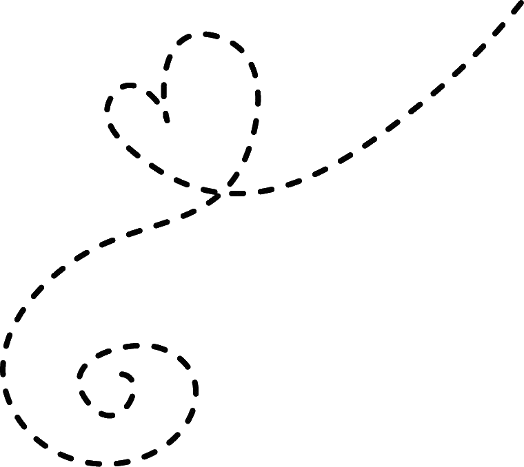

He entered what I once called home with expectancies
Regardless of my mood, or my souls vacancies
And if there were none he would find no need to stay any longer
His presence would loom over me with vague unease
When i refused, he would just sigh
Not look me in the eyes, not talk
Just straight ahead into the living room, he would walk
Passing by as would a stranger, in a strange place
Refusing to gaze upon the distress on my face
Estranged in my own home I would beg I would plea
Can you not love me,
If not my body you can see?
Would follow a sea, of tears but not from me
For some reason it was he who shed those drops of agony
As if to quench the thirst he held
For interacting with my physical form
My heart and soul were just a blockade
Holding him from taking more
Miniscule problems that could be fixed
By tearing my skin and fat from my core
Of course, who am I to him if not a bleeding naked whore?
Once convinced with the looks,
Of a heartbroken child
He reassured me if I did not let him
It would have just piled
Hurt me more in the long run,
What a thoughtful act
To punish me now rather than later,
When the events would be just a fact
When no soul would believe the crippling debts mine can now never lack
And protected is he who gets attacked for attacking, in the name of love and pact
After all, its all a lie
© 2026 İlay Güvenç. All Rights Reserved.
Contact: ilayg0016@gmail.com